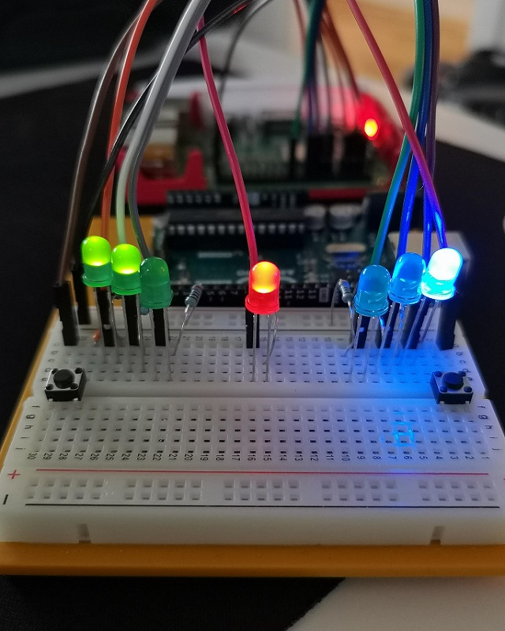

Raspberry Pi - Reaction Game
Jeg laget et reaction game med raspberry pi, programert i python ved hjelp av Thonny-IDE.
Hele prosjektet er basert på en "oppskrift" fra Raspberrypi.org, men videreutviklet til å holde score, både i consol og ved hjelp av led-lys
Utstyrsliste og byggeprosess
- 9x hann til hunn kabler fra raspberry pi til breadboard
- 6x 220ohm resistorer
- 7x led-lys (jeg brukte 3xblå, 3xgrønne og 1x rød)
- 2x knapper
- Raspberry Pi 3
- Breadboard
- 2x kabler til breadboard